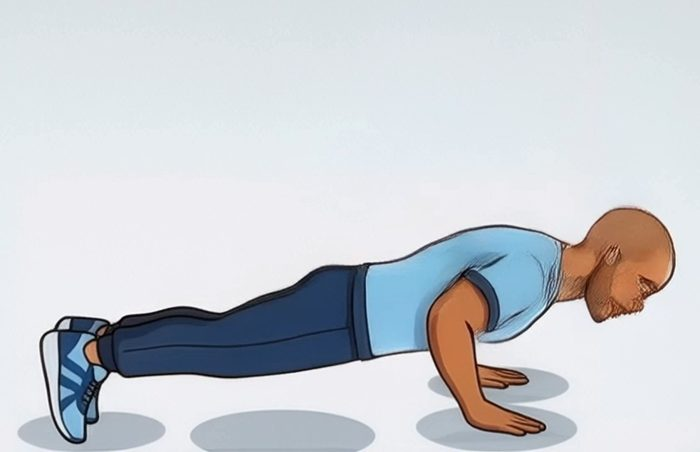
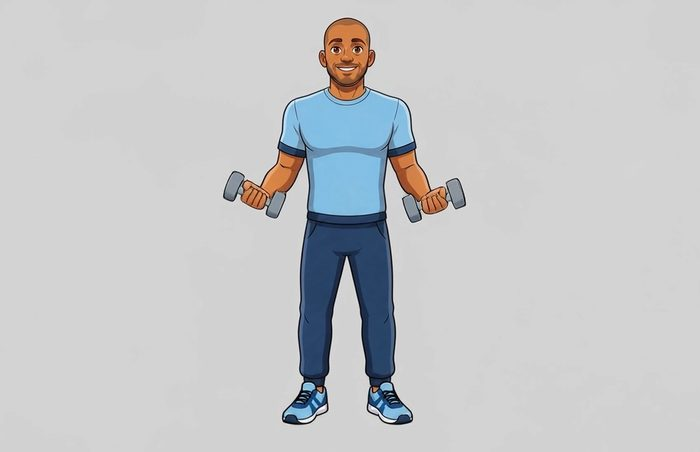
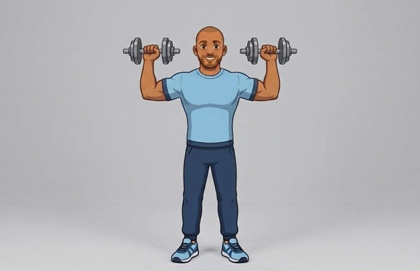

About fifteen minutes from the invite email to your first recorded workout. Do the setup once and you're ready to train.
Guide v12 · 12 October 2026 · for IP2X 0.3.14 (build 5)
The IP2X app runs here. It starts every workout and uploads your data.
It records your heart rate and wrist motion, and buzzes if your heart rate goes over your limit.
Apple's free app for installing test versions. Get it from the App Store on your iPhone.
An email or a link from the IP2X team. Send us the Apple ID email you use on your iPhone so we can add you.
Get TestFlight from the App Store on your iPhone, if you don't already have it.
Open the email from TestFlight on the iPhone itself and tap View in TestFlight. If we sent you a link, just tap the link.
TestFlight shows IP2X. Tap Accept, then Install.
The watch app comes with the phone app. If it isn't on your watch after a minute, open the Watch app on your iPhone, scroll to Available Apps, and tap Install next to IP2X.
Updates come in two sizes, and you'll handle each a little differently.
The app looks for small updates when you open it and again each time you come back to it. Once one has downloaded, this card appears at the top of the home screen (never while a session is running). Tap it and the app restarts on the new version:
No card? Give the app a moment in the foreground, or do it by hand:
When a big update is waiting for your phone, the home screen shows this card instead. Tapping it opens TestFlight:
Please install big updates soon. Small fixes only reach the newest version, so an old install quietly stops getting them. Tip: in TestFlight, open IP2X and turn on Automatic Updates, and big updates install by themselves.
Without these, a session looks fine on screen but records nothing, and the app can't always tell you why. There are three permissions, and they come at different moments:
The phone can't see what you allowed on the watch, so Check my setup is how you find out. Aim for Ready to record.
The first screen says Welcome to IP2X and asks What's your name? Your name is how we label your data, and nothing else.
Your name is tied to this phone. Once it's set, the app won't let you change it, so your history stays yours. If you ever reinstall, type exactly the same name. If the app says the name is already in use, or you're moving to a new phone, tell us and we'll sort it out.
The screen tells you what happens next: your phone asks for health access, we ask a few questions about you, we find your recent data and upload it, we check your setup.
iOS shows the Health permission sheet. Turn on everything it asks for and tap Allow. The sheet now lists date of birth, sex, height and weight as well: the app reads them so some of the next answers are filled in for you.
On a brand-new install the sheet can appear before you've typed your name. Allow it, then type your name and carry on. It won't ask twice.
Eight questions, one per screen: when you were born (month and year), your sex at birth, your height, your weight, which wrist wears the watch, your dominant hand, how often you train, and whether you take medication that affects your heart rate. The first screen says why: they help us read your heart rate fairly and map your watch's movement. Tap I agree, continue.
Scroll each wheel to your answer and tap Next; on the last one, tap Save. Every question needs an answer, and Prefer not to say counts as one. Height and weight start in feet and stones; tap the toggle for cm and kg. Anything Health already knew is filled in for you, so just check it. Your age sets your heart-rate limit unless you've set one yourself in Settings.
The watch asks for permission twice, at different times. It asks for Health the first time you open the watch app. It asks for Motion & Fitness the first time it records motion, which is your first set or the setup check. Allow both on your wrist. Until both are allowed, sessions won't record.
After the setup check, the app shows a short three-card guide and offers a Practice session. Practice runs the whole flow (watch, timer, reps, upload) but never counts. It's a good way to try things out.
Check my setup runs automatically during onboarding. It's also on the Session screen whenever you want it. It takes about half a minute: it tests the phone's upload, then runs a short session on the watch. Wear the watch while it runs. If the watch asks for Motion & Fitness during the check, tap Allow on your wrist.
A ? is not a failure. Some things, like whether you granted Health access, iOS never tells an app directly. The check only says ✓ once it has actually seen the data arrive.
Everything that applies to your setup is working. You're good to train.
Nothing is broken, but something couldn't be confirmed yet. Read the rows marked ?. This is common right after installing, before any health data has come in. Run it again in a few minutes.
Sessions may not record properly. Each row marked ✕ says exactly what to do. Do that, then tap Run again.
| Row | What it means | If it isn't ✓ |
|---|---|---|
| Phone can reach the server | Your phone is online and uploads are getting through. | Check Wi-Fi or mobile data. If the server was asleep, run it again in a minute. |
| Phone is collecting health data | Health records are actually arriving on the phone. | Often a ? on a fresh install. If it keeps saying nothing arrived, check Health → Sharing → IP2X. |
| Watch is paired with the app installed | Your iPhone can see a watch with IP2X on it. | Install IP2X on the watch from the Watch app on your iPhone. |
| Watch answered the phone | The watch started a short session when the phone asked. That also proves the watch's Health permission is granted. | Open IP2X on the watch and allow the Health permission sheet. |
| Motion & Fitness granted on the watch | The watch is allowed to record your wrist motion. | "Not asked yet" is normal the first time. Allow it on the wrist when asked. If it was refused: on the watch, Settings → Privacy & Security → Motion & Fitness → IP2X. |
| Motion data reaches the phone | Wrist motion from the watch made it across to your phone. | Keep the phone and watch close and run it again. If it still fails, restart the watch and try once more, then tell us. |
Above Start session, the app asks How are you wearing the watch? Set Wrist LeftRight and Crown toward HandElbow. It remembers your answer from last time, so usually you only check it. How to tell.
Tap Start session in the app. The watch starts by itself. You don't need to touch it.
Tap one of the seven tiles below, or Other › to search the full list. Tap the picture to watch a short demo.
Tap Start, do your set with the watch on, then tap Done.
The app asks How many reps were you able to do? Enter the true number, including 0. Your honest count is what the system learns from.
Then it asks Was this a real set, or a spoof? There's no default: tapping Real or Spoof is what saves the set. Nearly every set is Real. When to tap Spoof.
Tap End session. Your data only syncs while the app is open, so keep it open for a few seconds afterwards. You'll see a line like "Recorded 24 minutes of motion and heart rate ✓". That means your data is saved.



The same movement looks different to the watch depending on which wrist it's on and which way round it sits. Telling the app lets us line the motion up before we count reps. The crown is the dial on the side of the watch.
Look at your watch with your arm out in front of you. The crown points toward your fingers.
Crown toward: Hand
The crown points back toward your elbow. Common if you wear the watch "upside down" or on the other wrist.
Crown toward: Elbow
Wrist is simply the arm the watch is on: Left or Right.
Swapped mid-session? The exercise screen has the same two settings under How you're wearing the watch. Change them there; the change applies from that exercise on, and next session starts from it.
We're building a system that can tell a genuine set from a faked one. To learn that, it needs examples of both, each labelled truthfully by the person who did it. A spoof isn't a mistake or a cheat. It's data we want, and you're free to do as many as you like.
You did the exercise you picked, properly, and the rep count is true. This is almost every set.
You deliberately faked it. For example:
Spoof whenever you like, but always label it Spoof. A faked set saved as Real teaches the system the wrong thing.
The watch can only feel the arm it's on. We're teaching the system to count reps from that wrist's motion, so the number you enter has to describe what that wrist did. A rep done by your other arm leaves no trace on the watch. If you count it anyway, the motion and the number no longer match, and the system learns the wrong thing.
Alternating or one arm at a time (for example alternating bicep curls). You did 8 with each arm.
Enter 8, not 16.
Both arms move together (push-up, squat, sit-up, a two-handed press). The watch arm does every rep.
Enter the reps you did, e.g. 6.
A one-arm set with the non-watch arm. The watch arm stayed still.
Enter 0. Better still, swap the watch over or do that set with your watch arm.
That's the old version packed into the install, doing a long first read. Close the app completely and open it again. Nothing is lost.
Usually a watch permission hasn't been allowed yet. Open IP2X on the watch and allow the Health sheet. Do one warm-up set with your wrist up so the Motion & Fitness prompt appears, then allow it. Then run Check my setup.
Keep your phone near you while you train. If it keeps happening, restart the watch (hold the side button, drag Power Off, then hold it again to turn it back on) and run the check.
Restart the watch app, run Check my setup, and tell us. A watch that has stopped sending data doesn't show any error, and a restart almost always fixes it.
You don't lose anything. Your logged sets are already saved, and the watch keeps recording through the gap. When you reopen the app, it picks the watch back up by itself. Anything not uploaded yet goes up the next time the app is open and online.
Data only syncs while the app is open. Open IP2X after your session and leave it open for a few seconds.
Looking in the Fitness app (or Health → Workouts)? Your IP2X session isn't listed under the name IP2X. Look for Functional Strength Training; tap it and you'll see IP2X as the source.
A timing quirk on a brand-new install. Allow it, then type your name and carry on. It won't ask again.
Open Settings, find Your answers and tap Edit. Change what you need and tap Save on the last screen.
That's deliberate: your name is tied to this phone so your history stays yours. If you need it changed, or you're moving to a new phone, tell us.